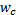
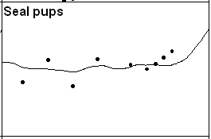
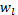
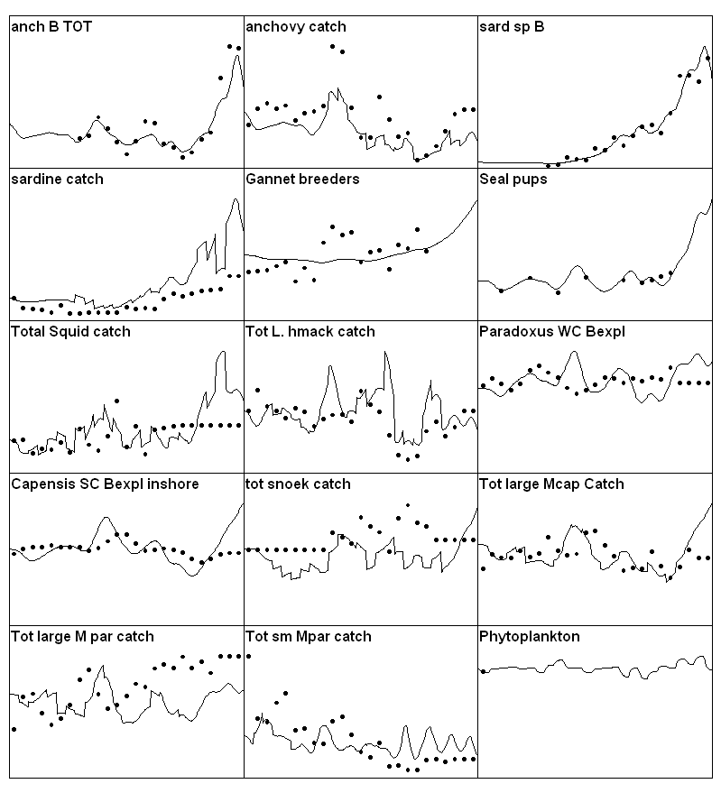

This demonstration necessarily involves an iterative exercise in ‘fitting’ the model to data, by correcting parameter estimates and time series forcing information so as to show what values (or ranges of values, or alternative hypotheses about key processes) could explain the observed historical patterns. For any such fitting exercise, it is critical to have as long a reference period, with as many different disturbance patterns, as is possible to assemble. Note though, that only where a time series is used to ‘drive’ the model, (i.e. fishing mortalities and effort series) is it necessary to have information for all years in the time series. Estimates of relative abundance, catches, etc. are not required for all years. Short reference data series carry little information about responses to some disturbances, and hence ability of a model to fit such short series is no test at all of its ability to make useful predictions about disturbances not represented in the reference data. In more vivid terms, many model errors (structure and parameter values) will only reveal themselves (make themselves evident through strong departures of predicted from observed patterns) when the model is challenged to reproduce very long time series of responses.
Here we recommend an iterative, stepwise procedure for model fitting. It is generally not possible, or even wise, to try fitting a large ecosystem model using one big nonlinear estimation scheme that simultaneously varies all uncertain model parameters and inputs. There are simply too many inputs, some of the parameters are constrained in complex ways by mass balance considerations, and many model errors involve qualitative omissions of interaction terms (or processes, or disturbing inputs) entirely. Such possible omissions are most productively viewed as ‘alternative hypotheses’ about what processes and inputs have been important in shaping historical ecosystem behaviour.
The basic idea in this procedure is as follows. Set up an Ecosim model and reference time series (of forcing inputs like fishing rates, and indices of temporal system response like relative biomasses and estimated total mortality rates). Examine the simulated and observed time patterns of response indices, look for groups that show large discrepancies in time pattern (trend), with particular emphasis on groups that have high biomass and are important prey or predator for other groups. As an example, sardines and anchovy in a Benguela model (Shannon et al., 2004) showed upward trend in data but not in initial simulation results. Focus in turn on each such group, and examine alternative hypotheses for the discrepancy (by varying appropriate parameters to see if the model fit is improved). The following are common hypotheses that should be examined in roughly the order listed:
Bad trend data — it is possible that the model predictions are sound, but that the trend data are misleading for some reason, (e.g., increasing catchability in CPUE indices).
Incomplete or incorrect forcing data, especially for fishing mortality rates—Ecosim-simulated patterns for exploited species will obviously not track observed patterns if those patterns have been caused by fishing, but no good time pattern of fishing mortalities (or at least fishing efforts) have been provided.
Changes in system productivity—in some systems we have seen correlated declines or increases across a variety of species, despite differences among species in harvesting impacts, which might be explained by changes in basic productivity due to factors like upwelling. The Ecosim Fit to time series form can be used to ‘reconstruct’ an apparent temporal pattern in primary productivity, by fitting the model to time series for all groups while varying a time series of productivity ‘anomalies’.
Trophic mediation effects—evaluate the possibility that changes in consumption and mortality have been caused by ‘indirect’ or ‘mediation’ effects, such as groups providing hiding places for other groups or driving behaviour of groups so as to make those groups more or less vulnerable to other predators. In systems that have benthic and pelagic primary producers, note that shading effects by phytoplankton on benthic plants are not represented explicitly in Ecosim, and must be modelled as mediation effects (by setting up a mediation function that causes negative effects on benthic plant production as phytoplankton biomass increases). This is also the case with turbidity and decreased foraging efficiency of visual predators that can be caused by phytoplankton.
If none of these hypotheses produces predicted patterns similar to the data, look closely at the Ecosim predicted patterns of change in consumption, growth, and mortality rates, and try to evaluate how these rates would have to change in order to produce observed trend patterns. Examine the observed time series for other groups, particularly prey and predators of the group under study, to see if those time series suggest changes in trophic conditions (growth, mortality) that have not yet been captured by the model due to inappropriate parameter settings for the other groups.
Repeat the multiple hypothesis evaluation steps above for each group, with initial emphasis on those groups for which the model predictions depart strongly from the data. Note that ‘correcting’ the parameters and time inputs for any one group can either improve or degrade the model fits for other groups, including groups for which good fits have already been obtained. This means that the fitting/evaluation process is necessarily iterative, requiring several passes or tries to obtain an overall valid model. For example, in the Benguela model example, obtaining good fits to strong time trends in sardine and anchovy biomass (using hypotheses (3) and/or (5) above) resulted in predicted increases in several predator populations, particularly hakes, for which the data do not indicate such increase. An interesting question then arose about why the predators did not show responses to the apparently large prey increases, and this question led to examination of a variety of hypotheses about why the response did not occur (limitation of recruitment due to cannibalism, undetected increases in fishing impact as responses started to occur so as to prevent those responses from being expressed, errors in initial estimates of diet composition and dependency on sardines and anchovy by the predators, etc.).
It is possible for the step-wise, iterative process of hypothesis evaluation and model testing/fitting described above to fail completely, in at least two basic ways. First, it may result in an apparently endless cycle back and forth between groups, with each step in the cycle resulting in improvement in fit to one group at the expense of poor fit to others. Such cycles have not yet been seen in case studies, but would indicate either ‘contradictory data’, where the model structure is valid but one or more trend data sets are misleading and apparently contradict the others, or a fundamental failure of the model structure to represent some important interactions or processes.
Second, the model may fail to capture (due to lack of correct input data or structural error) the dynamics of some particular, important group that has driven the dynamics of several others, and inability to simulate this one group may contaminate a variety of model predictions. For example, in models of the Bering Sea ecosystem, we have had trouble simulating (explaining) declines that apparently occurred in small, inshore pelagic fish species in the late 1970s and early 1980s. These declines were associated with onset of a rapid decline in Stellar Sea Lion, and onset of a strong upward trend in jellyfish (which compete with small pelagic fish for zooplankton). In that model, simply forcing the small pelagics to decline (with an arbitrary fake fishery) results in considerably better fits to the data for the other groups. In several models of relatively small oceanic regions (North Sea, West Coast of Vancouver Island), we have had to deal with apparently unpredictable biomass dynamics of species (especially mackerels) that have apparently invaded the regions in conjunction with changing ocean climate regimes. In fact, it is probably a general principle that for any region that might be arbitrarily defined for analysis, there are at least some species that have potentially important impact (on predator-prey relationships) within the region but display changes that can only be explained by examining their dynamics (production, fishing impacts) over some much larger spatial domain. With respect to any small study region, it is appropriate to treat the abundances of such species as forcing functions provided policy choices made within the region are unlikely to affect the larger scale dynamics of those species.
In most early Ecosim fitting exercises, the goal has been to find even one reasonably good fit to the data, i.e. to simply demonstrate whether the model is capable (flexible) of describing historical patterns. During such exercises, interesting alternative hypotheses and parameter changes that might have provided equally good explanations have not been thoroughly documented and pursued, nor have users typically even recorded the often simple research studies and auxiliary measurements that would be needed to test among alternatives (e.g., diet composition studies to detect rare prey in cases where an abundant predator may have big impacts on such prey despite such prey not being important to support of the predator). This failure to document the ‘brainstorming’ process involved in model fitting/testing can be costly for people who then try to use the model for policy analysis for several reasons:
Clear articulation of alternative hypotheses that could equally well explain historical changes is a critical part of adaptive policy design involving planned experimental comparisons of policy options;
Analyses based on the model are left open to attack by stakeholders who have vested interest in presuming some particular hypothesis to be true (e.g. people who want to blame stock declines on environmental factors so as to avoid restrictions in fishing); and
Potential value of the modelling to help guide and prioritize research projects is lost, and this is a very big issue indeed in situations where very limited scientific resources are expected to provide useful information for complex ecosystem management planning.
Documentation of alternative hypotheses and parameter-changes during the sequential fitting process would appear at first glance to be an exceedingly complex process, involving geometric increase in number of hypothesis combinations as more time series and groups are examined (e.g. if there are two ways to explain changes in group 1, and two ways to explain changes in group 2, there are 4 possible ways to explain the joint dynamics). This ‘explosion’ in hypotheses is not that serious a problem in practice, for at least two reasons: (1) uncertainty about why a group has responded or not may be independent of uncertainty about why other groups have responded, e.g. we can examine hypotheses (and policy implications) about failure of hake to increase following sardine-anchovy increases in the Benguela system, without regard to what drove those increases in the first place; and (2) typically the alternative hypotheses involve ‘environmental forcing’ versus fishing effects, and the environmental forcing hypotheses are not independent for each group (i.e. hypotheses about increases or decreases in productivity due to factors like upwelling are expected to apply to a variety of groups). The main implication of point (2) is that we can generally identify just a few overall hypotheses for why an ecosystem has behaved as it has, each with very different policy implications. For example, in the Georgia Strait, B.C. models, two main hypotheses have emerged (can be made to fit the data using Ecosim) about why a whole suite of fish species has declined: either the system as a whole has experienced major decreases in primary production, or the observed dramatic growth in marine mammal populations (harbour seal) has had devastating impacts not reflected in the relatively crude diet information available from historical studies (in conjunction with modest declines in primary production).
Figure 3.5 Initial time series fit for the Benguela model. Estimated using default values in Ecosim.

Figure 3.6 Time series fit for Benguela model after estimating vulnerabilities (for 15 groups of consumers).


Figure 3.7 Effect of P/B rate on time series fitting for seals in the Benguela model. Left figure is with a P/B of 0.95 year-1 for seals, while right-hand one is with a more realistic value of 0.15 year-1.

Figure 3.8 Time series fit for the Benguela model with primary production ‘anomaly’ estimated.